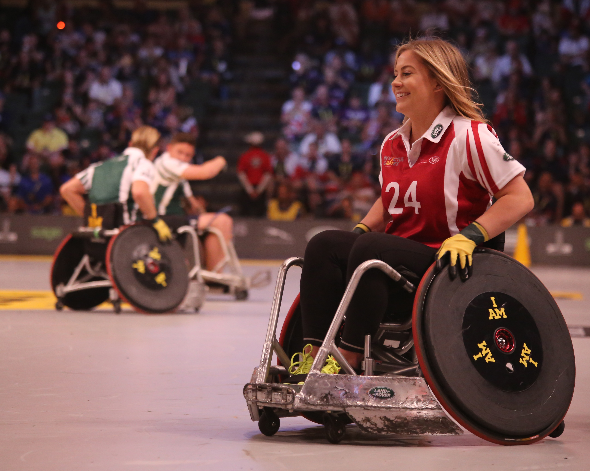

La missió del nen i el científic
Una història emocionant

En un laboratori sota un volcà de Hawaii hi havia un científic boig i un nen que es deia Manel i tenia 7 anys.
En aquest cas la missió era molt perillosa, havien de rescatar 4 superherois d’una cova on estaven captivats per un monstre.
Quan van arribar-hi a la cova es van trobar un monstre, que era molt gran i ferotge.El monstre controlava els superherois amb un botó molt gran que tenia a la mà.
El científic i el Manel no podien fer res perquè si s’apropaven, el monstre se’ls menjava.
El científic va fer una poció que congelava, la va ficar a dins d’un coet, i el van disparar a la cara del monstre.
El monstre va quedar congelat, van córrer cap el monstre i li van treure el botó de la mà, i el van destruir.
I finalment van fer un pacte,si no molestava a la gent es podia quedar a la terra.
Les aventures del Lucas i el Joan
Dos amics molt amics

Un dia el Lucas i el Joan anaven cap a l’escola.
Eren companys de classe i anaven a 2n, la seva professora es deia Anna i els hi agradava molt anar a l’escola.
Els hi agradaven els superherois i per això cada tarda anaven a casa del Joan a jugar a superherois.
Era un dia normal d’escola i quan van tornar a casa els dos amics van voler anar per un altre camí, estava fosc i no hi havia llum.
Anaven xino-xano caminant i es van perdre.
I van cridar auxili molt fort i teníen por. Molta por.
De sobte van sentir un soroll que venia del cel. Era un superheroi que es deia SUPERTRÒ i el Lucas i el Joan es van espantar una mica.
I li van preguntar qui era i el superheroi els hi va respondre que era un superheroi i que els venia a salvar i portar-los a casa seva.
I els dos amics li van dir com es deien i estaven super emocionats perquè havien conegut a un superheroi i li van explicar que a ells els hi agradaven molt els superherois.
Llavors el SUPERTRÒ els hi va dir que mai mes anessin per aquell camí i els va dur fins a casa.

Un dia va neixer una nena que es deia Clara.
Uns quants dies després de néixer li van detectar que no podria caminar.
Quan es va fer més gran es va donar compte que tots els nens de l’escola podien caminar, saltar, correr i jugar. Però amb ella no hi volia jugar ningú.
Els seus pares es preocupaven molt per ella perquè ella tenia un problema que era que no podia caminar.
Un dia la seva mare la va apuntar a fer bàsquet de nens i nenes que portaven cadira de rodes com ella.
Els primers dies li feia vergonya però després es va acostumar i li agradava molt.
Al bàsquet va fer amics de veritat.
Gràcies a això ara ja no se sent tan malament i tampoc se sent diferent als demés i això és amistat.